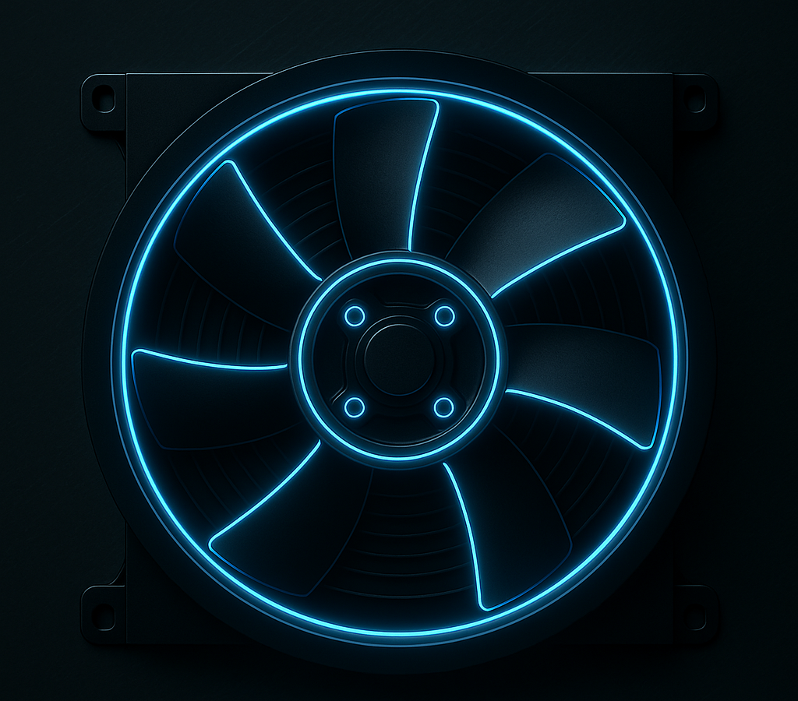

Cooling System
Engines get really hot when running — we’re talking over 200°C (400°F) inside the cylinders. If that heat isn’t managed, metal parts expand, oil breaks down, and the engine can overheat or even seize. That’s where the cooling system steps in — its job is to pull heat away from the engine and keep it running at the perfect temperature. It’s basically the car’s temperature control system, constantly moving coolant through the engine and radiator to keep things balanced.
Radiator

The radiator is like the car’s heat exchanger. Hot coolant from the engine flows through thin metal tubes in the radiator, and air passing through (while driving or from the fan) cools it down before sending it back to the engine. Think of it as the “lungs” of your cooling system — it breathes out heat.
Water Pump

The water pump keeps the coolant flowing, like a heart pumping blood. It pushes coolant from the engine to the radiator and back again. Usually driven by a belt from the engine, or sometimes electrically powered in newer cars. No water pump = no coolant flow = instant overheating.
Thermostat

The thermostat acts like a “temperature gate.” When the engine is cold, it stays closed, keeping coolant inside the engine to warm it up faster. Once it reaches the right temperature, it opens, allowing coolant to flow through the radiator to remove heat. Helps the engine warm up quickly and stay at the ideal temp for best performance and fuel efficiency.
Cooling Fan
When the car isn’t moving, no air passes through the radiator — that’s where the fan kicks in. It pulls or pushes air through the radiator to cool it down even while you’re idling in traffic. Some fans are electric (controlled by sensors), others are belt-driven on older cars. The fan is your “backup breeze” when you’re not speeding down the road.